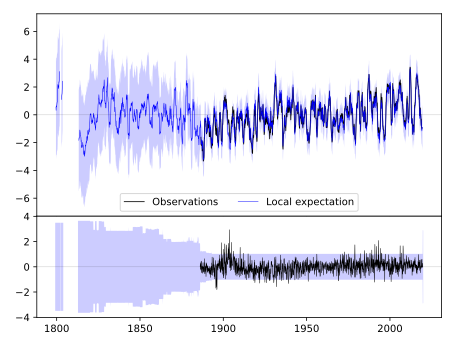
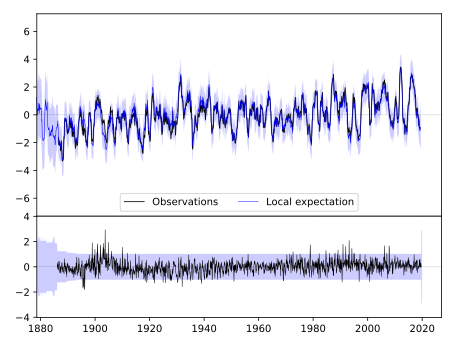
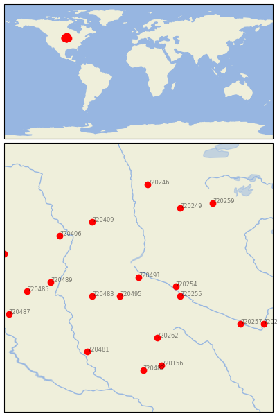

MILBANK 4 NW [USA]


| Neighbour | Name | Country | Distance | Lon/Lat | Years |
|---|
| 720491 | MILBANK 4 NW | USA | 0 | -96.7, 45.3 | 1886-2019 |
| 720495 | WATERTOWN RGNL AP | USA | 54 | -97.1, 44.9 | 1886-2019 |
| 720254 | MILAN 1 NW | USA | 66 | -95.9, 45.1 | 1893-2019 |
| 720255 | MONTEVIDEO 1 SW | USA | 83 | -95.8, 44.9 | 1889-2019 |
| 720483 | CLARK | USA | 90 | -97.7, 44.9 | 1893-2019 |
| 720262 | PIPESTONE | USA | 147 | -96.3, 44.0 | 1893-2019 |
| 720489 | MELLETTE 4 W | USA | 149 | -98.6, 45.2 | 1892-2019 |
| 720409 | LISBON | USA | 154 | -97.7, 46.5 | 1891-2019 |
| 720406 | FULLERTON 1 ESE | USA | 165 | -98.4, 46.2 | 1893-2019 |
| 720249 | DETROIT LAKES 1 NNE | USA | 180 | -95.8, 46.8 | 1890-2019 |
| 720485 | FAULKTON 1 NW | USA | 191 | -99.1, 45.0 | 1892-2019 |
| 720481 | ALEXANDRIA | USA | 198 | -97.8, 43.7 | 1882-2019 |
| 720257 | NEW ULM 2 SE | USA | 206 | -94.5, 44.3 | 1864-2019 |
| 720156 | ROCK RAPIDS | USA | 214 | -96.2, 43.4 | 1893-2019 |
| 720259 | PARK RAPIDS 2 S | USA | 216 | -95.1, 46.9 | 1885-2019 |
| 720482 | CANTON | USA | 222 | -96.6, 43.3 | 1893-2019 |
| 720246 | ADA | USA | 222 | -96.5, 47.3 | 1893-2019 |
| 720484 | EUREKA | USA | 232 | -99.6, 45.8 | 1893-2019 |
| 720487 | HIGHMORE 1 W | USA | 237 | -99.5, 44.5 | 1887-2019 |
| 720265 | ST PETER | USA | 240 | -94.0, 44.3 | 1877-2019 |